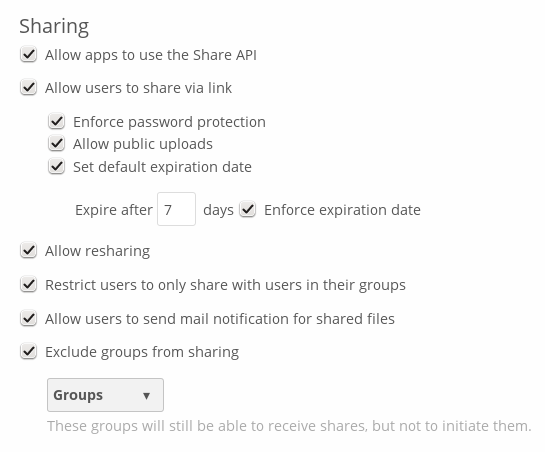
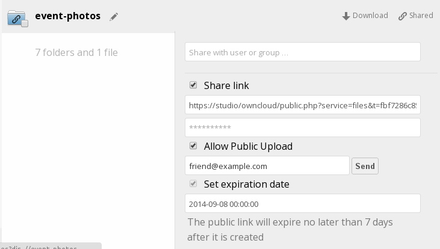
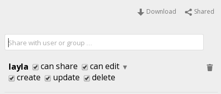

File Sharing¶
ownCloud users can share files with their ownCloud groups and other users on the same ownCloud server, and create public shares for people who are not ownCloud users. You have control of a number of user permissions on file shares:
- Allowing users to share files
- Allowing users to create public shares
- Requiring a password on public shares
- Allowing public uploads to public shares
- Requiring an expiration date on public share links
- Allowing resharing
- Restricting sharing to group members only
- Allowing email notifications of new public shares
- Excluding groups from creating shares
Configure your sharing policy on your Admin page in the Sharing section.

- Check
Allow apps to use the Share APIto enable users to share files. If this is not checked, no users can create file shares - Check
Allow users to share via linkto enable creating public shares for people who are not ownCloud users. This creates a hyperlink, just like a Web page, so your ownCloud server needs to be accessible to whoever you are sharing with - Check
Enforce password protectionto force users to set a password on all public share links. This does not affect local user and group shares - Check
Allow public uploadsto allow outside users to upload files to public shares - Checking
Set default expiration datesets a default expiration date on public shares, and checkingEnforce expiration datemakes it a requirement - Check
Allow resharingto enable users to re-share files shared with them - Check
Restrict users to only share with users in their groupsto confine sharing within group memberships - Check
Allow users to send mail notification for shared filesso that users can check “notify by email” when they create new file shares. This sends an email notification to everyone the file is shared with (everyone who has entered an email address on their Personal page) - Check
Exclude groups from sharingto prevent members of specific groups from creating any file shares in those groups. When you check this, you’ll get a dropdown list of all your groups to choose from. Members of excluded groups can still receive shares, but not create any
This is how it looks when a user creates a public share with passwords and expiration dates required:

This what a local share looks like. The user creating the share controls re-sharing, editing, updating, and deletion privileges:

Note
In older versions of ownCloud, you could set an expiration date on both local and public shares. Now you can set an expiration date only on public shares, and local shares do not expire when public shares expire. The only way to “expire” a local share is to click the trash can icon to un-share your files.
Note
ownCloud does not preserve the mtime (modification time) of directories, though it does update the mtimes on files. See Wrong folder date when syncing for discussion of this.